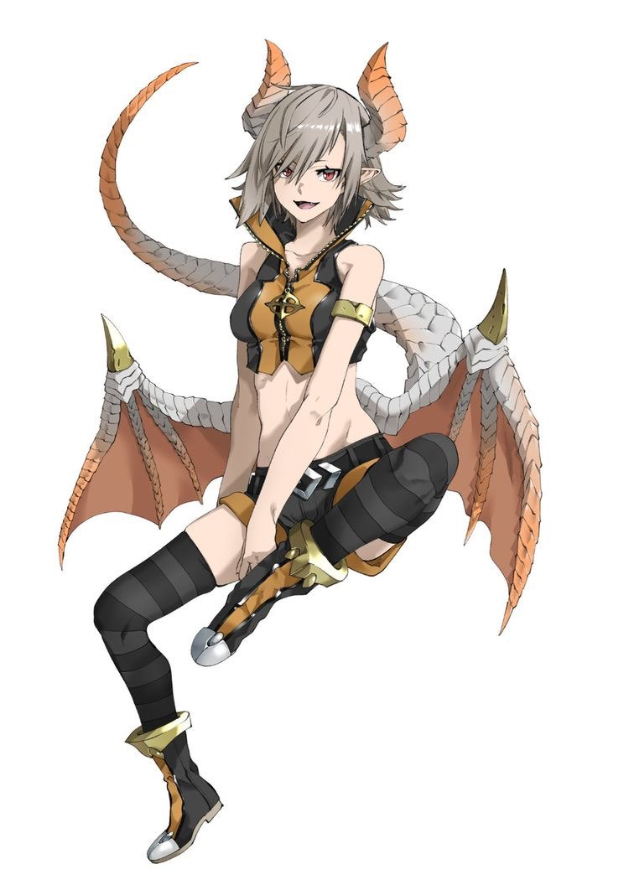

Drachenwesen und ihre Eigenschaften und Mythen
1. Art: zur Hälfte ein Mensch und ein Drache
Drachenkinder sind halb Mensch und halb Drachen.
Die Drachen selbst sind bereits ausgestorben, aber ihre „Nachkommen" sind geblieben.
Drachenkinder sind noch schneller als Vampire und stärker als Werwölfe.
Außerdem können die meisten zwar nur ein Element beherrschen, dieses aber perfekt wie kein anderer.
Drachenkinder laufen normalerweise in ihrer Halbform, außer sie sind unter Menschen. Da sehen sie selbst fast wie ein Mensch aus.
Die Halbform besteht aus schrägen Pupillen, ledernen Schwingen auf dem Rücken, leichte Schuppen vom Nachen bis zum Steiß,
zwei Hörner die nach hinten gehen (Maximallänge ist 15 cm) und einen Schwanz der ungefähr 5 cm Durchmesser hat.

Sie besitzen die Fähigkeit sich in einen echten Drachen verwandeln zu können. Sie haben einen inneren Drachen.
Drachenkinder können wie Vampire auf zwei Weisen entstehen, Sie werden entweder geboren oder bei Gleichgeschlichen Paaren gibt es eine antike Schale,
in der man das Blut beider Mates vermischt und einer von beiden trinkt es. Zweiteres funktioniert nur unter Mates.
Drachenkinder können ab ihrem 25. Lebensjahr ihre/n Mate aufspüren. Drachenkinder gehen automatisch in die nähere Umgebung ihrer Mates ohne es zu kontrollieren.
In der Nähe ihrer Mates könne sie außerdem sehr schwer ihre Halbform zurückhalten. Drachenkinder leben in einem einzigen Clan, über welcher das Königsgeschlecht wacht.
Das Königsgeschlecht herrscht faktisch über jedes Volk nutzten aber den Großteil dieser Macht nicht.
Wenn es nur noch ein Drachenkind aus dem Königsgeschlecht gibt, bekommt es selbst für dieses Volk überdurschnittliche Kräfte.
Drachenkinder können bis zu 600 Jahre alt werden.
Wenn ihr/e Mate stirbt besitzen sie drei Möglichkeiten: Sie können ihren Schmerz mit der Welt teilen, dass bedeutet sie lösen eine Zerstörung von der Größe eines Dorfes bis zu der ungefähren Größe eines Bundesstaates aus,
sie sperren ihren inneren Drachen ein und sind für die Familie da oder sie gehen in den Vulkan des blauen Drachen, indem sie verbrennen und die Asche den Clan unterstützt.